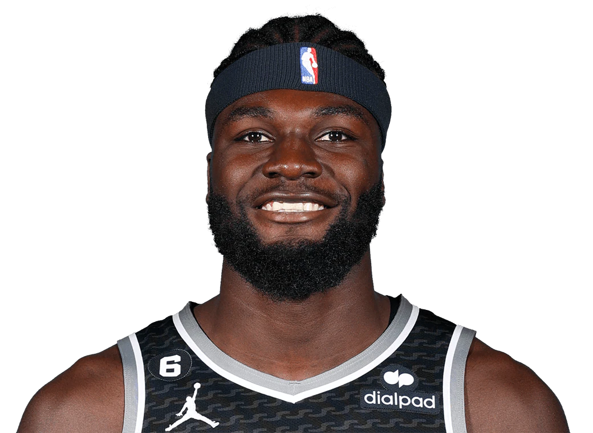

Professional Basketball Player
"Do vale da Amoreira para o Mundo", said Nemmias Queta after being selected by the Sacramento Kings in the 39th Position of the Draft.
Neemias Esdras Barbosa Queta (born 13 July 1999) is a Portuguese professional basketball player for the Sacramento Kings of the National Basketball Association (NBA), on a two-way contract with the Stockton Kings of the NBA G League. He started playing basketball in 2009 for F.C. Barreirense and later played college basketball for the Utah State Aggies. He was selected with the 39th overall pick in the 2021 NBA draft, being the first Portuguese player ever drafted. He became the first Portuguese citizen ever to play in the NBA on December 17, 2021.